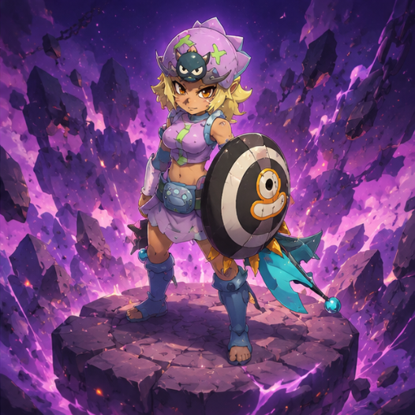
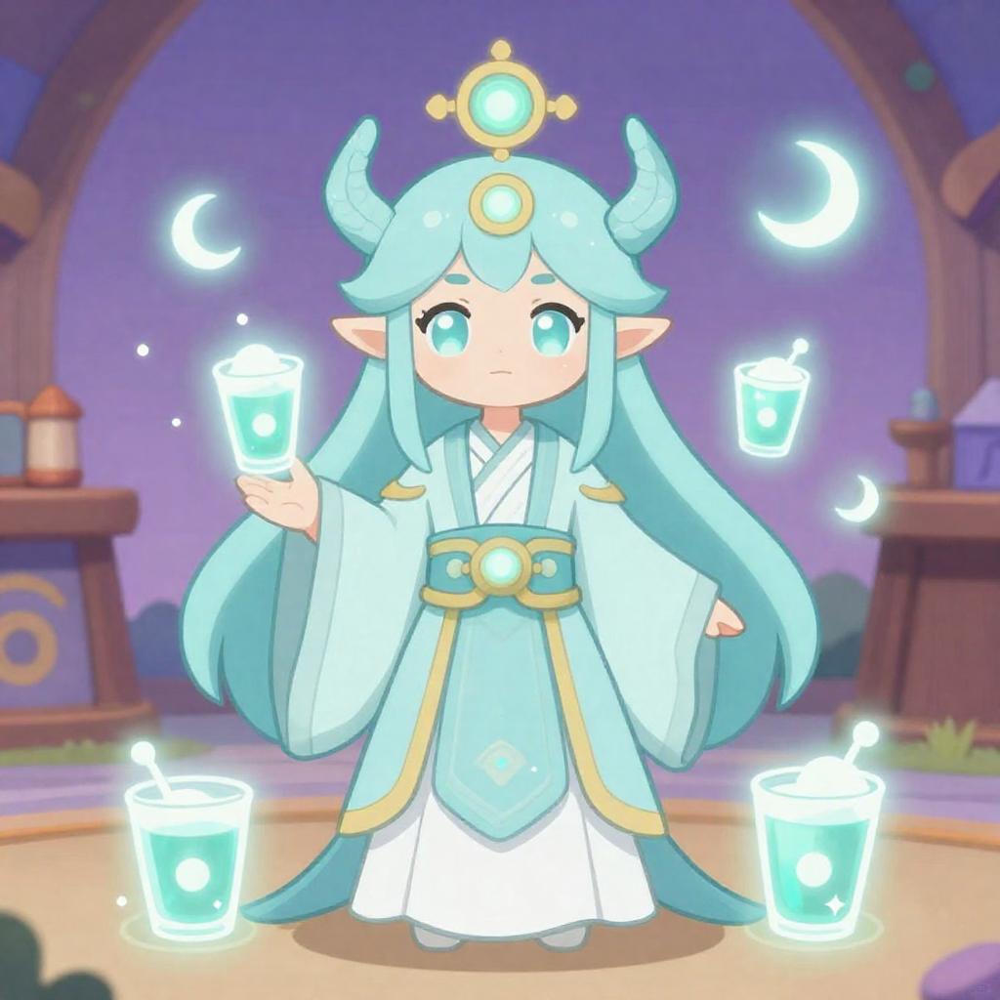
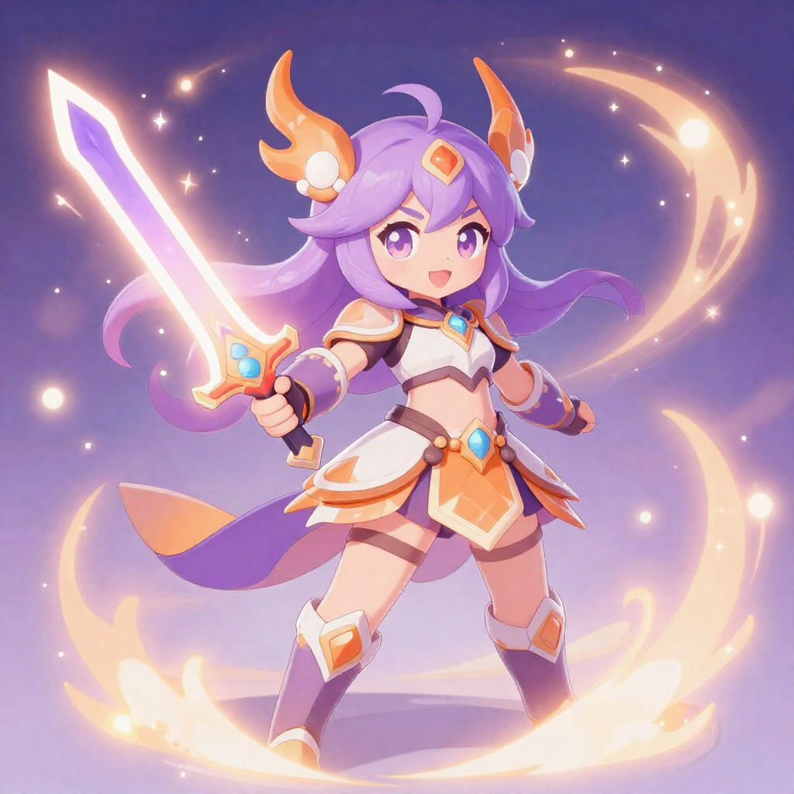

Un gremio nacido entre sueños astrales, raids caóticos, noches infinitas y demasiado café.
Cute, pero hostiles.
“La magia también puede romperte la cara.”

“Si muerde, probablemente es mío.”

“No estoy AFK. Estoy meditando.”

“La violencia también es una estrategia.”
Las canciones oficiales del caos.
$ git commit -m "fix: caos astral again"
✔ build successful
✔ deploying to astral servers...
⚠ yopuka pushed to production
✖ reality.exe stopped working